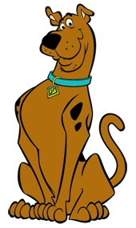

-
Scooby Doo
PW 500
Descrição
Tem medo da própria sombra e, sem querer, acaba salvando a turma ou pegando os vilões. Sempre impulsionado pela promessa de um bom lanche, biscoitos caninos (os Biscoitos Scooby) ou caramelos.
-
Salsicha
PW 350
Descrição
Salsicha é o dono de Scooby-Doo. Ele é covarde, medroso e faminto, dividindo com Scooby a paixão por guloseimas, sanduíches, sorvetes e outras delícias. Tem pavor dos fantasmas e é o primeiro a não querer participar dos casos. Sempre se dá mal com os vilões, mas acaba dando sorte e os capturando com ajuda de Scooby.
-
Velma
PW 390

Descrição
É uma garota inteligente e cheia de ideias que desvenda os mistérios com Fred. Velma é a melhor amiga de Daphne. Sempre com alguma tirada científica, encontra soluções lógicas para resolver casos complexos
-
Dephne
PW 200
Descrição
Filha de milionários, é o alvo preferido dos vilões que, muitas vezes, a raptam, mas ela sempre é esperta o bastante para escapar e improvisar soluções em situações inusitadas. Daphne e Fred tem um laço amoroso.
-
Fred
PW 540

Descrição
Diferente de Salsicha, é corajoso, sendo o líder do grupo. Sempre ávido por um novo mistério, porém, em certas ocasiões, é lerdo — mesmo assim, não perde a graça. Cria engenhocas para se defender dos inimigos e suas paixões são armadilhas e Daphne.